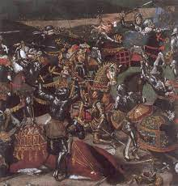
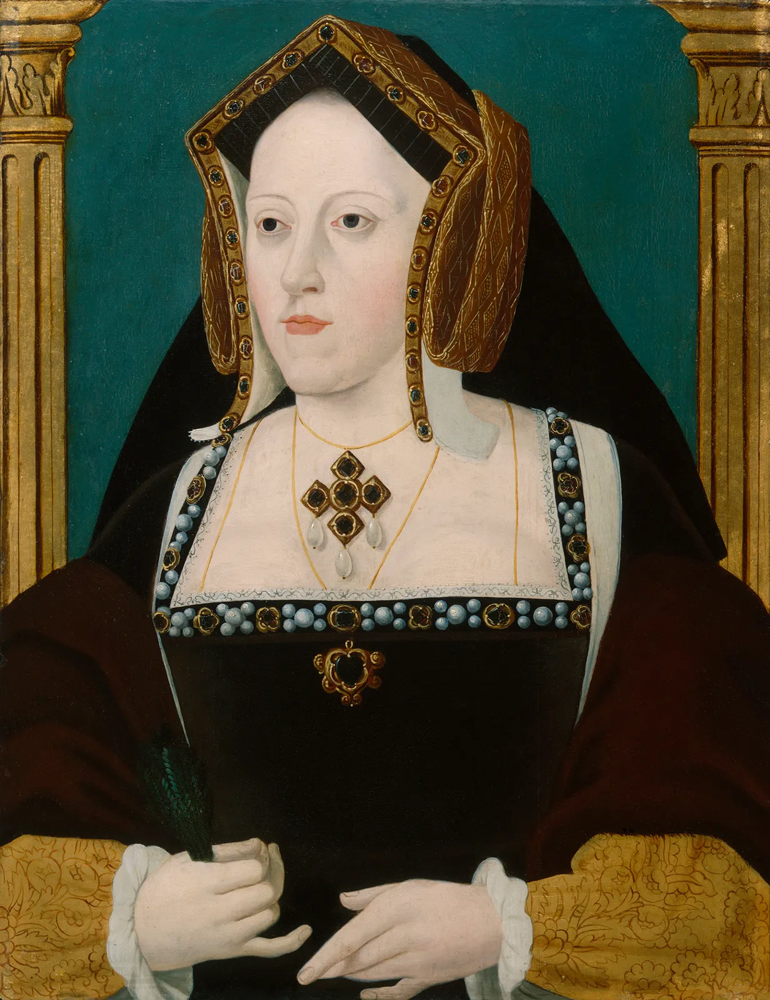

Source: wiki
Born on 28 June 1491 at the Palace of Placentia in Greenwich, Kent, Henry Tudor was the third child and second son of King Henry VII and Elizabeth of York.Of the young Henry's six (or seven) siblings, only three – his brother Arthur, Prince of Wales, and sisters Margaret and Mary – survived infancy.He was baptised by Richard Foxe, the Bishop of Exeter, at a church of the Observant Franciscans close to the palace.In 1493, at the age of two, Henry was appointed Constable of Dover Castle and Lord Warden of the Cinque Ports. He was subsequently appointed Earl Marshal of England and Lord Lieutenant of Ireland at age three and was made a Knight of the Bath soon after. The day after the ceremony, he was created Duke of York and a month or so later made Warden of the Scottish Marches. In May 1495, he was appointed to the Order of the Garter. The reason for giving such appointments to a small child was to enable his father to retain personal control of lucrative positions and not share them with established families.Not much is known about Henry's early life – save for his appointments – because he was not expected to become king,[6] but it is known that he received a first-rate education from leading tutors. He became fluent in Latin and French and learned at least some Italian.
In November 1501, Henry played a considerable part in the ceremonies surrounding his brother Arthur's marriage to Catherine, the youngest child of King Ferdinand II of Aragon and Queen Isabella I of Castile.As Duke of York, Henry used the arms of his father as king, differenced by a label of three points ermine. He was further honoured on 9 February 1506 by Holy Roman Emperor Maximilian I, who made him a Knight of the Golden Fleece.
In 1502, Arthur died at the age of 15, possibly of sweating sickness,[citation needed] just 20 weeks after his marriage to Catherine.Arthur's death thrust all his duties upon his younger brother. The 10-year-old Henry became the new Duke of Cornwall, and the new Prince of Wales and Earl of Chester in February 1504.Henry VII gave his second son few responsibilities even after the death of Arthur. Young Henry was strictly supervised and did not appear in public. As a result, he ascended the throne "untrained in the exacting art of kingship".
Henry VII renewed his efforts to seal a marital alliance between England and Spain, by offering his son Henry in marriage to the widowed Catherine.Henry VII and Catherine's mother Queen Isabella were both keen on the idea, which had arisen very shortly after Arthur's death.On 23 June 1503, a treaty was signed for their marriage, and they were betrothed two days later.A papal dispensation was only needed for the "impediment of public honesty" if the marriage had not been consummated as Catherine and her duenna claimed, but Henry VII and the Spanish ambassador set out instead to obtain a dispensation for "affinity", which took account of the possibility of consummation.Cohabitation was not possible because Henry was too young.Isabella's death in 1504, and the ensuing problems of succession in Castile, complicated matters. Catherine's father Ferdinand preferred her to stay in England, but Henry VII's relations with Ferdinand had deteriorated.Catherine was therefore left in limbo for some time, culminating in Prince Henry's rejection of the marriage as soon he was able, at the age of 14. Ferdinand's solution was to make his daughter ambassador, allowing her to stay in England indefinitely. Devout, she began to believe that it was God's will that she marry the prince despite his opposition.
His Life
His Achievements
His Six Wives